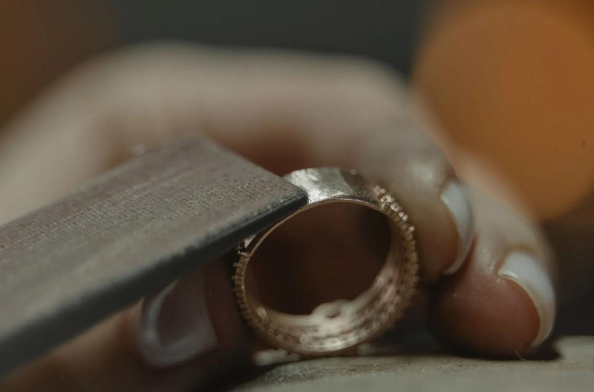
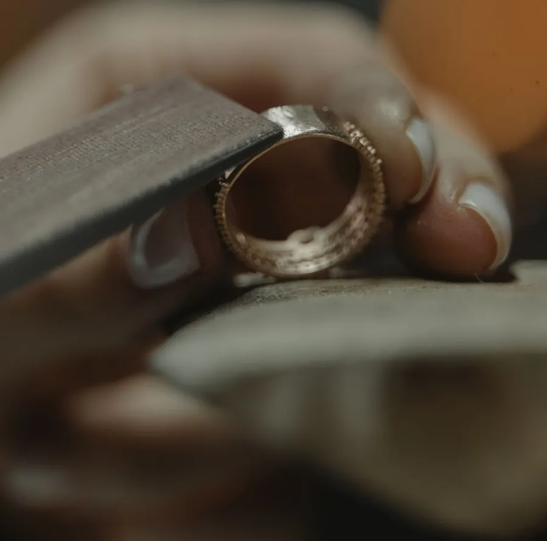
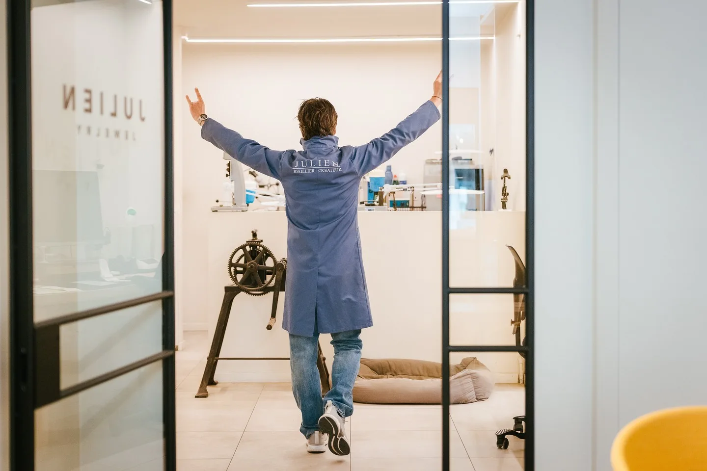
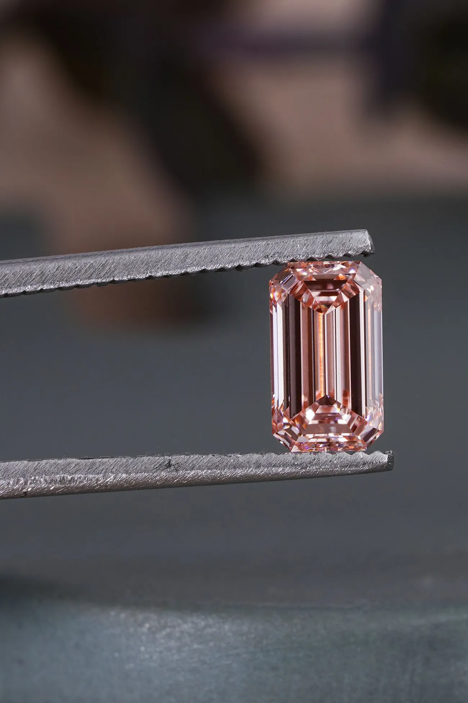
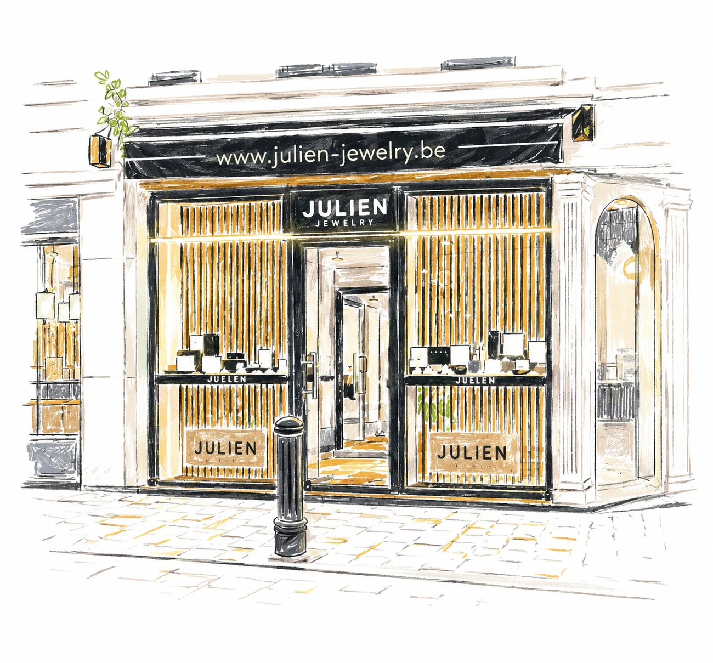

Hanger
Meet the Goldbot
geel goudEen robotje in geel goud, met een groene diamant als hart.

Verlovingsringen, trouwringen en juwelen met een gekleurde diamant. We tekenen het eerst samen uit, daarna maak ik het met de hand in mijn atelier. Voor jou, en voor niemand anders.


Sinds 2011 maak ik juwelen in Gent. Na al die jaren heb ik nog altijd evenveel goesting om te maken en te doen wat ik het liefst doe. Wat je bij mij koopt, komt niet uit een catalogus. Het ligt eerst op papier en dan op mijn werkbank.
JulienGoudsmid en zaakvoerder
Je vertelt wat je zoekt, of waar je over twijfelt. Een verlovingsring, jullie trouwringen of iets voor jezelf.
Ik teken je juweel uit, met de steen en het goud dat je kiest. Zo zie je wat het wordt voor ik begin.
Klopt de schets, dan maak ik het met de hand. Eén keer, en enkel voor jou.


Ik volg geen regels: waar ik goesting in heb, dat maak ik. Een robotje met een diamanten hart, de draak van het Belfort aan je mouw, de Gentse torens in je oren.
Een robotje in geel goud, met een groene diamant als hart.

Met een ovale diamant. A little mechanical, a little human.

De draak die al eeuwen over Gent waakt.

Kleine oorknopjes met diamantjes.

Maar over het lepeltje met de draak. Koffie wordt hier serieus genomen.

Wit is mooi, kleur is goesting. Een roze, blauwe, groene of gele diamant, naast een witte steen in een toi et moi of helemaal alleen op een slanke band.

Het goud, de breedte en de afwerking kiezen we samen. Verlovingsringen maak ik helemaal op maat, van schets tot ring.
Ringen passen doe je best in de winkel, met de twee samen. Laten we een datum prikken.
“Ontzettend goed ontvangen en geholpen door de meest gepassioneerde juwelier uit Gent en omstreken.”Paulien Cardinaels, op Google
Julien heeft ons fantastisch geholpen met de keuze voor een ring. Een absolute aanrader voor wie een persoonlijke aanpak wil.Stijn Van DaeleGoogle
We waren op zoek naar de perfecte verlovingsring en dankzij het deskundig advies, geduld en oog voor detail hebben we die gevonden.Stijn De RuddereGoogle
Julien is een man waarbij je zijn passie voelt in zijn handgemaakte juwelen. Mijn man en ik hebben onze trouwring bij hem gekocht.Brent MarilineGoogle


Hier staat mijn werkbank en hier ontmoet ik zoveel fijne mensen. Loop binnen, of stuur me eerst een berichtje, dan maak ik tijd voor je.
Vogelmarkt 8, 9000 Gent · 09 233 38 44 · @julien_jewelry_
Ik maakte deze demo voor u om te tonen wat er kan. Na een kort gesprek maak ik er iets veel persoonlijkers van, helemaal naar uw wens.
Vrijblijvend. Ik kom langs of we bellen.
Op maat, op uw eigen domein.
Geen voorschot. U betaalt pas als alles klaar is.
Hosting, domeinnaam en kleine wijzigingen, zoals nieuwe openingsuren.
Omdat een voorbeeld meer zegt dan een mail. Zo ziet u meteen wat er kan, en het kost u niets.
Nee. Het gesprek is vrijblijvend. Vindt u het niks, dan is het daarmee gedaan.
Na ons gesprek staat uw site binnen 10 tot 14 dagen online.
Zeker. Uw domeinnaam kan gewoon blijven, de nieuwe site komt in de plaats van de oude.
Nee, dat doe ik op basis van ons gesprek. Eigen foto's zijn mooi meegenomen, maar niet nodig om te starten.